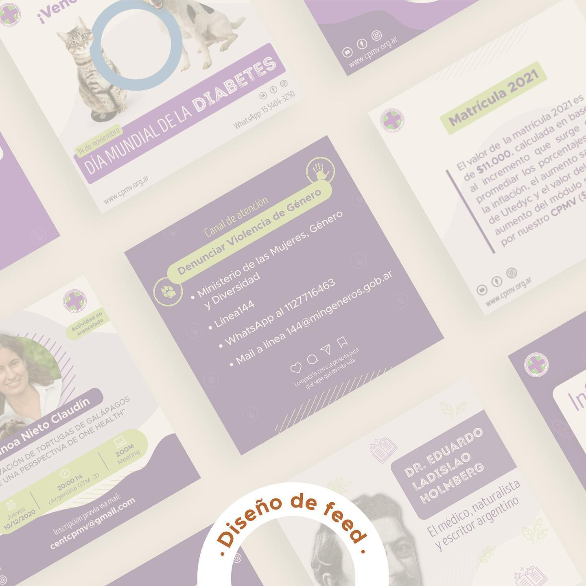

LSApp
Diseño de contenidos para redes sociales y recursos visuales para comunicar de manera clara y atractiva.
Cada proyecto tiene su propia historia. En FLOVA Studio trabajamos junto a nuestros clientes para transformar sus ideas en soluciones visuales, digitales y creativas.

Desde contenidos para redes sociales hasta el diseño de sitios web, acompañamos cada proyecto con creatividad y atención a los detalles.
Diseño de contenidos para redes sociales y recursos visuales para comunicar de manera clara y atractiva.
Diseño de piezas gráficas y contenidos para la comunicación institucional en redes sociales.
Creación de un sitio web institucional, desde los primeros bocetos en Figma hasta su desarrollo y lanzamiento.
Nos encantaría conocer tu idea y ayudarte a transformarla en realidad.
Hablemos de tu proyecto